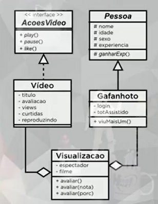

Na segunda parte do exercício, faremos a ligação das classes Video e Gafanhoto, usando uma classe com o nome Visualizacao. Esse é o diagrama dela:
Veja o código de Visualizacao:
package projetoyoutube;
public class Visualizacao {
private Gafanhoto espectador;
private Video filme;
public Visualizacao(Gafanhoto espectador, Video filme) {
this.espectador = espectador;
this.filme = filme;
this.filme.setViews(this.filme.getViews() + 1);
this.espectador.setTotAssistido(this.espectador.getTotAssistido() + 1);
}
@Override
public String toString() { // Ele automaticamente chamará os métodos toString de espectador e filme
return "Visualizacao{" + ", espectador=" + espectador + ", filme=" + filme + "}";
}
public Gafanhoto getEspectador() {
return espectador;
}
public void setEspectador(Gafanhoto espectador) {
this.espectador = espectador;
}
public Video getFilme() {
return filme;
}
public void setFilme(Video filme) {
this.filme = filme;
}
}
E na classe principal, podemos fazer isso:
package projetoyoutube;
import java.util.List;
import java.util.ArrayList;
public class YoutubePoo {
public static void main(String[] args) {
List<Video> v = new ArrayList<>(); // Importe java.util.List e java.util.ArrayList
v.add(new Video("Aula 1 de POO"));
v.add(new Video("Aula 12 de Java"));
v.add(new Video("Aula 15 de HTML5"));
List<Gafanhoto> g = new ArrayList<>();
g.add(new Gafanhoto("Jubileu", 22, "M", "Jubi"));
g.add(new Gafanhoto("Creuza", 12, "F", "Creuzita"));
List<Visualizacao> vis = new ArrayList<>();
vis.add(new Visualizacao(g.get(0), v.get(2)));
System.out.println(vis.get(0).toString());
vis.add(new Visualizacao(g.get(0), v.get(1)));
System.out.println(vis.get(1).toString());
}
}
Agora faremos o polimorfismo de sobrecarga. Terá três tipos de avaliação, por like, por nota e por porcentagem de vídeos assistidos.
Abaixo do método construtor em Visualização, apenas poste isso:
public void avaliar() {
this.filme.setAvaliacao(5);
}
public void avaliar(int nota) {
this.filme.setAvaliacao(nota);
}
public void avaliar(float porc) {
int nova = 0;
if(porc <= 20) {
nova = 3;
}
else if(porc > 20 && porc <= 50) {
nova = 5;
}
else if(porc > 50 && porc <= 90) {
nova = 8;
}
else {
nova = 10;
}
this.filme.setAvaliacao(nova);
}
Mas tem um porém, várias pessoas podem ver o vídeo, e dessa forma ele fará que a última avaliação que prevaleça. Para resolver isso, criaremos uma forma dele criar uma média de avaliações.
Na classe Video, em public void setAvaliacao, modificaremos pra isso:
public void setAvaliacao(int avaliacao) {
int media;
media = (int)(this.avaliacao + avaliacao) / this.views;
this.avaliacao = media;
}
Como podemos ver, podemos personalisar os métodos getter e setter, nem sempre precisamos "aceitar" tudo que o Netbeans nos sugere.
E na classe principal, para exibir, faremos isso:
package projetoyoutube;
import java.util.List;
import java.util.ArrayList;
public class YoutubePoo {
public static void main(String[] args) {
List<Video> v = new ArrayList<>(); // Importe java.util.List e java.util.ArrayList
v.add(new Video("Aula 1 de POO"));
v.add(new Video("Aula 12 de Java"));
v.add(new Video("Aula 15 de HTML5"));
List<Gafanhoto> g = new ArrayList<>();
g.add(new Gafanhoto("Jubileu", 22, "M", "Jubi"));
g.add(new Gafanhoto("Creuza", 12, "F", "Creuzita"));
List<Visualizacao> vis = new ArrayList<>();
vis.add(new Visualizacao(g.get(0), v.get(2)));
System.out.println(vis.get(0).toString());
vis.add(new Visualizacao(g.get(0), v.get(1)));
System.out.println(vis.get(1).toString());
vis.get(0).avaliar();
vis.get(1).avaliar(85.0f);
System.out.println(vis.get(0).toString());
System.out.println(vis.get(1).toString());
}
}
PS: Graças a orientação a objetos, podemos ligar o Java com banco de dados.
Podemos usar também "tipos genéricos", usando apenas uma letra maiúscula, que nos permite configurar os tipos usados em Java, por exemplo:
public class TesteGeneric {
private static class Generico<E> { // Classe interna privada e estática, com parâmetro de tipagem.
private E entidade;
public E getEntidade() {
return this.entidade;
}
public void setEntidade(E entidade) {
this.entidade = entidade;
}
}
public static void main(String[] args) {
Generico<String> texto = new Generico<>();
texto.setEntidade("Exemplo de String!");
System.out.println(texto.getEntidade());
Generico<Integer> numero = new Generico<>();
numero.setEntidade(50);
System.out.println(numero.getEntidade());
}
}
PS: Podemos criar normalmente uma classe externa com tipos genéricos, basta adaptar o código acima.
Caso use mais de um tipo genérico, coloque dentro da mesma tag, separados por vírgulas. Em heranças e implementações, caso a classe a ser herdada ou a interface a ser implementada tenha tipos genéricos, a classe herdeira ou implementadora deverá ter o mesmo tipo (por exemplo, se a interface for public interface NomeDaInterface<E>, a classe que a implementa deverá ter o tipo a ser recebido indicado, como por exemplo public class NomeDaClasse implements NomeDaInterface<Integer>, e nesse caso o objeto criado será NomeDaInterface objeto = new NomeDaClasse(). Caso não declare o tipo genérico e queira que ele seja declarado na criação do objeto, coloque a extensão ou implementação (no caso seria public class NomeDaClasse<E> implements NomeDaInterface<E>), e nesse caso o objeto criado será NomeDaInterface<ClasseInvolucro> objeto = new NomeDaClasse<>(). Esse é o conceito de polimorfismo paramétrico.
PS: Só podemos passar tipos de classes invólucros dessa forma, então use Integer, Float, Double e Character. Observe também que criamos uma classe interna e estática pra isso, mas podemos usar classes externas para tipos genéricos, assim como interfaces.